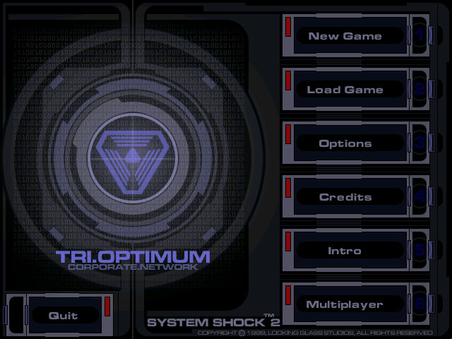
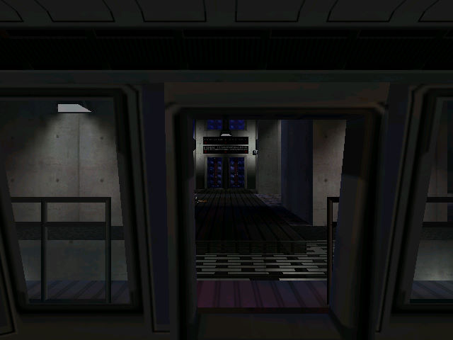

名稱：網路奇兵2／網絡奇兵2 (System Shock 2，英文版)
簡介：Looking Glass 1999年出品的第一人稱動作冒險遊戲，兼具與角色扮演的元素，由EA
代理發行 [待補]。


保護：光碟SafeDisc 1.35
備註：本遊戲有1999原始版（執行檔為1999/7/17）和2000更新版（執行檔為1999/11/2）等
兩種光碟，尚不知其差異。
備註：VirtualBox無法執行，虛擬機請使用VMware。
檔案：crack.rar = 破解檔（含原始版與更新版，仍需放入光碟）